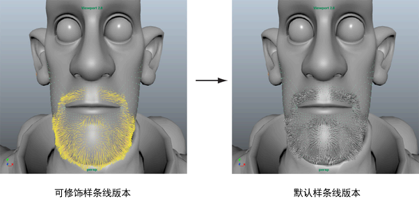
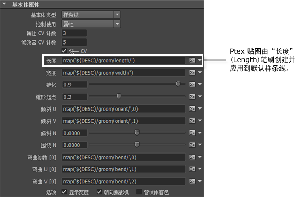
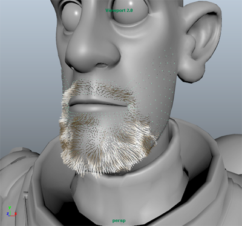

在示例的此部分，您可以预览修饰的默认样条线版本。您可以随时切换回修饰样条线并继续对其进行修饰。
- 预览默认样条线之前，请执行以下操作：
- 保存场景。
- 在“修饰”(Grooming)选项卡的“设置”(Settings)部分中，禁用“可见性”(Visibility)。
这会禁用可修饰样条线的显示，从而可以在您使用默认样条线时提高 XGen 的性能。
- 若要将修饰作为默认样条线进行预览，请单击“预览”(Preview)图标
 。
。
默认的样条线显示在您使用可修饰样条线填充的区域内。
 - 单击“基本体”(Primitives)选项卡。
请注意，对于许多属性而言，将会显示贴图文件路径，而不是数值。这表示这些属性由 Ptex 贴图控制。当您使用“修饰”(Grooming)笔刷绘制时，将会创建和更新这些贴图。
您可能需要进一步编辑样条线，以生成所需的角色胡须外观。例如，您可以为样条线添加锥化或颜色。
- 若要为样条线添加锥化，请在“基本体属性”(Primitive Attributes)部分中，设置下列各项：
- “锥化”(Taper)：0.2
- “锥形起点”(Taper Start)：0.3
- 若要在预览中为默认样条线设置颜色，请单击“预览/输出”(Preview/Output)选项卡。
请注意，Ptex 贴图定义“基本体颜色”(Primitive Color)属性。您可以改用表达式生成颜色样例，然后为胡须选择一种颜色。
- 在“基本体颜色”(Primitive Color)旁边，单击图标
 以打开 “XGen 表达式编辑器”(XGen Expression Editor)。
以打开 “XGen 表达式编辑器”(XGen Expression Editor)。
- 在“XGen 表达式编辑器”(XGen Expression Editor)中，单击“采样数”(Samples)选项卡。
- 单击“全局”(Global)旁边的 +，然后单击“UI”旁边的 +。
- 从显示的表达式列表中，单击一个颜色相关的表达式，例如 color_green。
- 单击“接受”(Accept)。
颜色样例将显示在“基本体颜色”(Primitive Color)旁边。
- 单击该颜色样例，然后为样条线选择一种颜色。

您设置的“基本体颜色”(Primitive Color)不会出现在渲染的描述中。若要在渲染输出中为样条线指定颜色，您必须修改 XGen 头发着色器（请参见设置 XGen 头发着色器的颜色值）。
继续使用修饰笔刷和默认的样条线属性来获得所需的外观。使用所需的渲染器渲染描述。请参见着色和渲染 XGen 基本体。